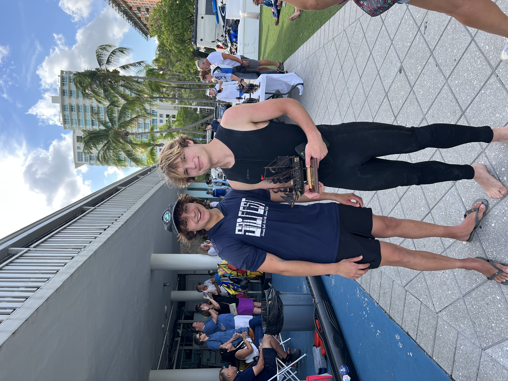

about me
i'm Ludvig Fellstrom, a sophomore studying Electrical and Computer Engineering at Cornell University. My work sits at the intersection of hardware design, artificial intelligence, and renewable energy, areas I believe will define the next generation of technological progress.
my journey
I first became fascinated by renewable power systems, especially nuclear energy, and how efficient design can change the way we power our world. At the same time, I grew up surrounded by computers, experimenting, coding, and realizing how deeply they touch every part of modern life. That intersection between digital logic and the physical world is what led me to electrical engineering.
current work
Today, I channel that curiosity into projects that merge AI and embedded systems, from developing autonomous sailboats with CUSail to creating AI-driven social matching systems during my internship at Ghost Social. I'm also a course TA for ECE 2400, where I help students deepen their understanding of computer systems programming, a field I'm deeply passionate about. What excites me most about engineering is the process itself, the way debugging feels like solving a puzzle, where each layer of logic reveals a deeper understanding of how complex systems interact.

long-term vision
My long-term goal is to work at the frontier of innovation, contributing to companies and research that push the limits of chip design, sustainable power systems, and AI-hardware integration, and eventually to build my own engineering firm that applies these technologies to real-world problems.
beyond engineering
Outside of engineering, I explore the world through science and creativity. My ongoing mycology project, where I designed a smart control system for mushroom cultivation, combines my love for biology, electronics, and experimentation. It reflects how I like to learn, hands-on, interdisciplinary, and deeply curious.
core mission
At my core, I'm driven by one thing: using technology to create meaningful, lasting impact, systems that work smarter, cleaner, and closer to the way nature intended.